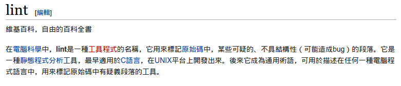

一開始，由 Douglas Crockford 寫了一個 JSHint
有些人也這麽覺得。有個人這麽稱呼 JSLint：
這是一個能讓你寫code寫得像
Douglas Crockford的工具
後來他 Fork 了JSLint，再施了點魔法，就變成了 JSHint
idiomatic.js 的作者 Rick Waldron 在維護JSHint 已經包涵了大部分的狀況，但可能還是不夠。所以又冒出了另一群人，施了 更多 的魔法。也就生出了今天的主題， ESLint。
Nicholas Zakas 開發，他是 Professional JS for Web Devs 的作者可以透過 npm 來安裝
npm install -g eslint
首先，你需要寫一個 .eslintrc.
也可以透過 cli 來幫你創一個
eslint --init再來就可以執行他了
eslint examples
然後所有的 bad practice 就都跑出來了
出現後就把code改Clean讓他們消失吧！
但如果我們想要寫屬於我們自己的 rules，我們可以這麽做
npm install -g yo
npm install -g generator-eslint